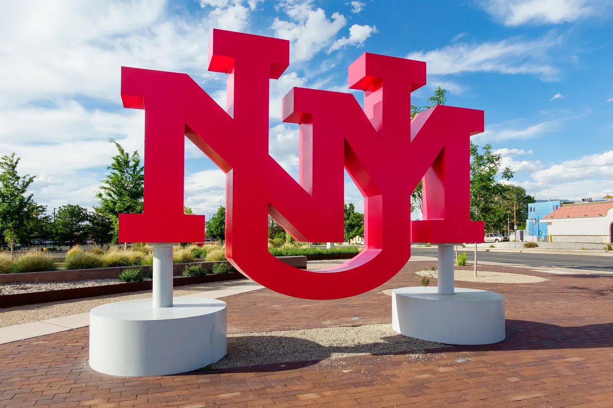
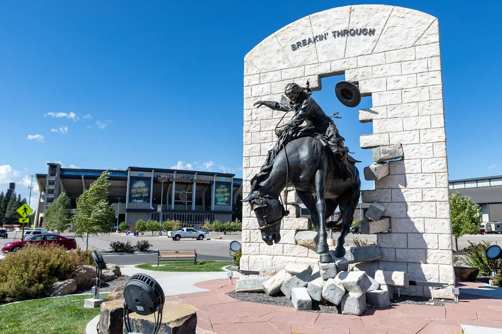

The Elevation Change No. 5 New Mexico Lobos, coming off a surprising loss to UNLV last week, take on the Mountain West leading No. 6 Wyoming Cowboys in a potential conference championship game preview.
The Lobos are coming off their first conference loss of the season and just their second on the year. New Mexico was in control for most of the game against UNLV, but to late touchdown drives by the Rebels sealed the upset win, despite New Mexico being a 19.5 point favorite.
Running backs Scottre Humphrey and Kiefer Sibley were the only Lobos to really get going against a so-so Rebel defense. Humphrey finished with 89 yards and a touchdown while Sibley added 77 yards.

The normally stout Lobos defense, who is second in country in points and yards allowed per game across the country, slackened a bit too much on UNLV’s two fourth quarter touchdown drives. The Rebels built back-to-back drives of 95 and 65 yards to take the lead after only having one drive of 50+ yards in the rest of the game.
The Lobos had a shot of potentially taking the lead late, but two drives led to two turnovers, one on a failed fourth down and the other on Toa Fa’avae’s lone interception of the evening.
Wyoming enters the contest as the hottest team in the Mountain West, winning five-straight games after starting the season 2-3 with offenseless losses to Colorado State, Central Michigan, and North Dakota State. Since that loss against the Bison, have had impressive wins against Air Force and UNLV, but also having closer games than they would have liked against San Jose State and UTEP.
Dual-threat quarterback Tyler Hughes has been the star for the Pokes’ offense this season, but an arm injury in their win against UNLV sidelined him for the first time this year. Backup Landon Sims started his first game as a Cowboy and threw for 289 yards and a touchdown in a valiant relief effort. Hughes is doubtful for the matchup against the Lobos, meaning that Sims will have his toughest test yet this Friday.

Cowboy running back Samuel Harris also had good game for the Pokes, finishing with a combined 148 yards and two touchdowns. With 34 rushing yards on Friday, he’ll surpass his career high in rushing yards, which currently is at 558.
Both teams sit atop the Mountain West and this matchup will go a long way to determining who will be the conference favorite when the Mountain West title game rolls around on December 4. New Mexico had stood all alone at the top of the conference, but Wyoming resurgence allowed the Cowboys to take the conference lead by half a game.
The Elevation Change model still likes the Lobos despite their loss last week and playing on the road at a fairly hostile environment. Both teams have played excellent football this season, and have proved to be some of the best G6 teams across the country, but we’re going to agree with our model and say New Mexico snags the tough victory in Laramie. There is not going to be a ton of points scored, but with the Lobos vicious defense against a still-acclimating backup quarterback, give us New Mexico in a ground-and-pound matchup that will be determined by one or less scores.
Prediction
- New Mexico
- 27
- Wyoming
- 19